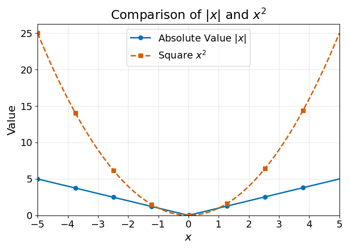

10 Evaluating Regression Models
The previous chapter described how to evaluate classification models. The main approach was simple:
- Set aside a fraction of the training dataset as test set
- Train the model on the train set, do not use the test set
- Use the trained model to generate predictions on the test set
- Compute the distance between the predictions and the labels of the test
The exact same approach can be applied to regression models. The only difference with the previous chapter is the computation of the distance between predictions and true labels.
As a reminder, a regression task is the prediction of any continuous quantity, such as the temperature tomorrow, the price of a property or a crop yield.
The general idea is still the same: \[ \text{Input} \longrightarrow \text{Model} \longrightarrow \text{Prediction} \]
10.1 Evaluating Distances
Let’s start with a simple example of a model predicting the price of a property:
| Property | Predicted Price | Actual Price |
|---|---|---|
| 1 | 140 | 120 |
| 2 | 110 | 100 |
| 3 | 100 | 130 |
How would you measure the error of this model? One way to do this is to measure the distance between each prediction and the ground truth using the distance functions explored in the Distance chapter.
The error of each prediction can be computed with the following formula:
\[ \text{Prediction Error} = \text{Prediction} - \text{Ground Truth} \]
The error in the prediction for property 1 is:
\[ \text{Prediction Error}_1 = 140 - 120 = 20 \]
The model over-predicted the price of the property by 20.
Exercise 10.1 Show that the prediction errors for property 2 and 3 are \(10\) and \(-30\) respectively.
Solution 10.1. You should get the following table:
| Property | Predicted Price | Actual Price | Prediction Error |
|---|---|---|---|
| 1 | 140 | 120 | 20 |
| 2 | 110 | 100 | 10 |
| 3 | 100 | 130 | -30 |
Now, how can we aggregate these errors to come up with an evaluation of the model? One idea would be to compute the average error (for \(n\) observations):
\[ \text{Average Error} = \frac{\text{Error}_1 + \text{Error}_2 + \cdots + \text{Error}_n}{n} \]
Computing the average error of the example model, we get:
\[ \text{Average Error} = \frac{20 + 10 + (-30)}{3} = \frac{0}{3} = 0 \]
Using the \(\Sigma\) operator described in the Distance chapter, this notation can be made more compact:
\[ \text{Average Error} = \frac{1}{n} \sum_{i=1}^{n} (\text{Prediction}_i - \text{Truth}_i) \]
If you are not familiar with the \(\Sigma\) operator, please refer to the Distance chapter in which this concept is clearly explained.
10.2 Beyond Subtraction
Do you notice something strange? The average model error is \(0\), which would describe a perfect model. Yet, we do see that this model is not perfect, it makes errors, it does not perfectly predict the actual price of any property listed above.
The issue with averaging errors is that they cancel out. The numerator of the fraction becomes \(0\).
Remembering the Distance chapter, could we use another distance function to avoid this problem?
There are two main methods we could use:
- Averaging the absolute values of the errors
- Averaging the squared errors
10.2.1 Mean Absolute Error
The absolute value of a number \(x\) is noted \(|x|\). It is the magnitude of the number, regardless of its sign. As an example \(|2| = |-2| = 2\). When we average the absolute values of the error, we can compute the Mean Absolute Error (MAE):
\[ \text{Mean Absolute Error} = \frac{| \text{Error}_1 | + | \text{Error}_2 | + \cdots + | \text{Error}_n |}{n} \]
Using the \(\Sigma\) notation to make this more compact:
\[ \text{MAE} = \frac{1}{n} \sum_{i=1}^{n} | \text{Prediction}_i - \text{Truth}_i | \]
Computing the Mean Absolute Error for the example data:
| Property | Predicted Price | Actual Price | Prediction Error |
|---|---|---|---|
| 1 | 140 | 120 | 20 |
| 2 | 110 | 100 | 10 |
| 3 | 100 | 130 | -30 |
We get:
\[ \text{MAE} = \frac{|20| + |10| + |-30|}{3} = \frac{20 + 10 + 30}{3} = \frac{60}{3} = 20 \]
This metric is much better than the average error as it gives us an idea of the average distance between individual predictions and the ground truth. Looking at the example data, the model is on average \(20\) away from the ground truth.
10.2.2 Mean Squared Error
Another way to do so is to compute the average of the squared errors. This metric is called the Mean Squared Error (MSE):
\[ \text{Mean Squared Error} = \frac{\text{Error}_1^2 + \text{Error}_2^2 + \cdots + \text{Error}_n^2}{n} \]
Or, in \(\Sigma\) notation:
\[ \text{MSE} = \frac{1}{n} \sum_{i=1}^{n} (\text{Prediction}_i - \text{Truth}_i)^2 \]
This method has the advantage of turning every error into a positive number before averaging. This way, errors do not cancel out.
Computing the Mean Squared Error for the example data, we get:
\[ \text{MSE} = \frac{20^2 + 10^2 + (-30)^2}{3} = \frac{400 + 100 + 900}{3} = \frac{1400}{3} \approx 466.67 \]
Do you notice something strange? The resulting metric is much larger than expected, beyond the scale of the original errors.
One way to make this metric more interpretable is to take the square root of this number:
\[ \sqrt{466.67} \approx 21.6 \]
This is called the Root Mean Squared Error (RMSE), another commonly used regression model performance metric. It is computed as follows:
\[ \text{RMSE} = \sqrt{ \frac{1}{n} \sum_{i=1}^{n} (\text{Prediction}_i - \text{Truth}_i)^2 } = \sqrt{\text{MSE}} \]
10.2.3 Average Error is still useful
Does that mean that we should never use average Error? Not exactly.
The Average Error is still a useful metric to see if a prediction model has a bias; i.e., if a model consistently over- or under-predicts. If the average error of the model is not close to \(0\), it means that there is systematic over- or under-prediction.
This can be illustrated with the following example:
| Property | Predicted Price | Actual Price |
|---|---|---|
| 1 | 150 | 120 |
| 2 | 130 | 100 |
| 3 | 140 | 130 |
Exercise 10.2 Calculate the Average Error of this model and determine whether the model over- or under-predicts.
Solution 10.2. \[\begin{aligned} \text{Prediction Error}_1 &= 150 - 120 = 30 \\ \text{Prediction Error}_2 &= 130 - 100 = 30 \\ \text{Prediction Error}_3 &= 140 - 130 = 10 \\ \text{Average Error} &= \frac{30 + 30 + 10}{3} = \frac{70}{3} \approx 23.33 \end{aligned} \]
Since the average error is positive, the model over-predicts.
10.3 Practice Exercise
Looking at these two pricing models, which one would you pick?
| Property | Model A Prediction | Model B Prediction | Truth |
|---|---|---|---|
| 1 | 150 | 140 | 120 |
| 2 | 110 | 100 | 100 |
| 3 | 100 | 140 | 140 |
Exercise 10.3 Show that Model B generates predictions that are closer to the truth than Model A, using the error metrics shown above.
Solution 10.3.
Model A:
- Errors: \(150-120=30\), \(110-100=10\), \(100-140=-40\)
- Average Error: \(\frac{30 + 10 + (-40)}{3} = 0\)
- MAE: \(\frac{|30| + |10| + |-40|}{3} = \frac{30 + 10 + 40}{3} = 26.67\)
- MSE: \(\frac{30^2 + 10^2 + (-40)^2}{3} = \frac{900 + 100 + 1600}{3} = \frac{2600}{3} \approx 866.67\)
- RMSE: \(\sqrt{866.67} \approx 29.43\)
Model B:
- Errors: \(140-120=20\), \(100-100=0\), \(140-140=0\)
- Average Error: \(\frac{20 + 0 + 0}{3} = 6.67\)
- MAE: \(\frac{|20| + |0| + |0|}{3} = \frac{20}{3} \approx 6.67\)
- MSE: \(\frac{20^2 + 0^2 + 0^2}{3} = \frac{400}{3} \approx 133.33\)
- RMSE: \(\sqrt{133.33} \approx 11.55\)
All metrics show that Model B is closer to the truth.
10.4 Choosing Between Metrics
This chapter has introduced four performance metrics:
- Average Error
- Mean Absolute Error
- Mean Squared Error
- Root Mean Squared Error
In the example above, all metrics agreed; in other words, all metrics gave an advantage to Model B. This is not always the case.
Exercise 10.4 Compute the MSE and MAE of the two models below:
| Property | Model A Prediction | Model B Prediction | Truth |
|---|---|---|---|
| 1 | 115 | 110 | 100 |
| 2 | 105 | 110 | 120 |
| 3 | 125 | 130 | 140 |
| 4 | 100 | 90 | 150 |
Solution 10.4.
Model A:
- Errors: \(115-100=15\), \(105-120=-15\), \(125-140=-15\), \(100-150=-50\)
- MAE: \(\frac{|15| + |-15| + |-15| + |-50|}{4} = \frac{15 + 15 + 15 + 50}{4} = \frac{95}{4} = 23.75\)
- MSE: \(\frac{15^2 + (-15)^2 + (-15)^2 + (-50)^2}{4} = \frac{225 + 225 + 225 + 2500}{4} = \frac{3175}{4} = 793.75\)
Model B:
- Errors: \(110-100=10\), \(110-120=-10\), \(130-140=-10\), \(90-150=-60\)
- MAE: \(\frac{|10| + |-10| + |-10| + |-60|}{4} = \frac{10 + 10 + 10 + 60}{4} = \frac{90}{4} = 22.5\)
- MSE: \(\frac{10^2 + (-10)^2 + (-10)^2 + (-60)^2}{4} = \frac{100 + 100 + 100 + 3600}{4} = \frac{3900}{4} = 975\)
As you can see, Model A has a higher MAE than Model B, and Model B has a higher MSE than model A. How can that be? To understand the reason why, we need to understand the difference between the absolute value and the squared value of a number. These two functions are visualised below:

You may see that the square function increases faster as numbers grow larger or more negative, whereas the growth rate of the absolute value function stays constant. This means that the Mean Squared Error will strongly penalise extreme errors. Remembering the previous example:
| Property | Model A Prediction | Model B Prediction | Truth |
|---|---|---|---|
| 1 | 115 | 110 | 100 |
| 2 | 105 | 110 | 120 |
| 3 | 125 | 130 | 140 |
| 4 | 100 | 90 | 150 |
Model B has a very high prediction error on property 4 (\(-60\)), which results in a higher MSE value than Model A, despite having a lower Mean Absolute Error. What to do in these cases?
First, this does not happen often. It was a bit of work to build an example that would show this edge case.
Practical considerations aside, there is no one-size-fits-all metric. The best metric is the one that best measures the consequences of an error in the real world.
Taking the example of property pricing, large errors can have a strong negative impact:
- Over-pricing may lead to financial losses as the pricing company may not be able to sell the property
- Under-pricing may reduce the number of deals a real estate company can make
Given these considerations, the Mean Squared Error is a better choice.
There are also mathematical reasons why the Mean Squared Error and Root Mean Squared Errors are sometimes preferred over the Mean Absolute Error. One of them is explained in the note below.
The Mean Absolute Error (MAE) function is not differentiable at \(0\), because the absolute value function \(|x|\) has a “sharp corner” at \(x=0\).
This is an issue for many machine learning algorithms, which rely on differentiability for optimisation (such as gradient descent). In contrast, the Mean Squared Error (MSE) is differentiable everywhere, making it easier to use for training models.
10.5 Final Thoughts
This section described regression model evaluation. It is very similar to the approach used for classification models described in the previous chapter:
- Set aside a share of the training data as a test set
- Using the trained model, generate predictions on this test set
- Calculate the distance to the truth of the predictions generated using performance metrics such as Average Error, MAE, MSE or RMSE
The main difference is the distance calculation used.
This is it for model evaluation. The next chapter will introduce this book’s second Machine Learning model architecture: Decision Trees.